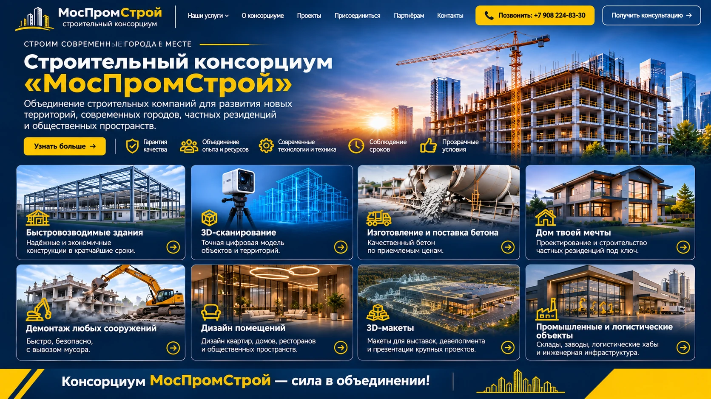

Восемь строительных и архитектурных направлений
Каждое направление — отдельная страница с подробностями, изображениями и возможностью обсудить задачу.

Быстровозводимые здания
Каркасные корпуса, склады, мастерские и производственные помещения.
Подробнее ↗
3D-сканирование
Аэросъёмка, наземные измерения, цифровые модели территорий.
Подробнее ↗
Изготовление и поставка бетона
Поставки под задачи строительного объекта. Стоимость по запросу.
Подробнее ↗
Дом твоей мечты
Индивидуальные дома, современные резиденции, архитектурные решения.
Подробнее ↗Демонтаж сооружений
Подготовка площадки и организация демонтажных работ.
Подробнее ↗
Дизайн помещений
Интерьеры квартир, домов, ресторанов и общественных пространств.
Подробнее ↗
Архитектурные 3D-макеты
Макеты зданий, кварталов, стадионов и территорий для выставок.
Подробнее ↗Промышленные объекты и генподряд
Корпуса, реконструкция, координация строительных работ.
Подробнее ↗Изображения иллюстрируют виды работ и не являются утверждением, что эти объекты построены консорциумом.
Участвовать в проектах совместно
Приглашаем строительные компании, проектировщиков, технологические команды и поставщиков представить свои компетенции, ресурсы и опыт. Формат участия и распределение ответственности определяются для каждого проекта.